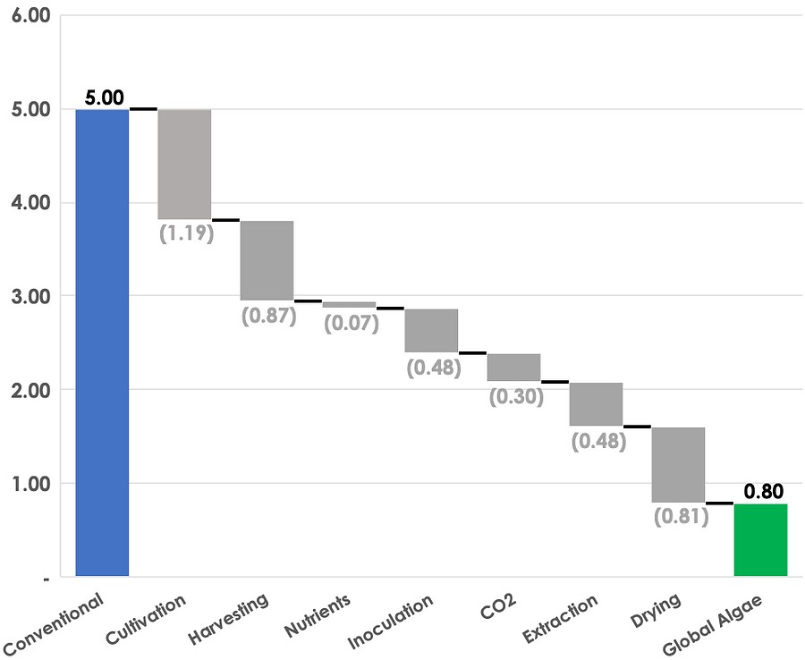

Economia - Produção de biocombustível a partir de algas
Fatores econômicos:
- Preços em larga escala ainda são desconhecidos, existem apenas hipóteses;
- Preço atual do biocombustível: $67,00 por galão (Solazyme, 2012);
- Os custos variam muito com as técnicas de separação da biomassa;
- a PBR costuma ser mais barata PRP devido a sua maior concentração de biomassa;
- Enquanto as PBR chegam em $2,95 por kg, as PRP custam em torno de $3,80 o kg;
- Se a capacidade anual de produção for aumentada para 10 000 toneladas, os custos diminuem para $0,47 e $0,60 o kg para PBR e PRP, respectivamente.
- Considerando que sejam extraídos 30% de combustível em massa e assumindo uma eficiência de 66% na conversão em biodiesel, os custos por galão seriam em torno de $8,03 (PBR) e $10,38 (PRP)
- Atualmente o custo do galão de diesel é em torno de $5,705 (fonte: https://www.globalpetrolprices.com/USA/diesel_prices/)
Fonte: An Overview of Algae Biofuel Production and Potential Environmental
Impact (2012)
Global Algae Innovations

- Podem substituir grande parte da alimentação animal, reduzindo a produção de rações e, consequentemente, o desmatamento e o aquecimento global;
- Reduzem o aquecimento global por retirar o CO2 da atmosfera durante a produção;
- São capazes de produzir 40 vezes mais alimento por Acre, ou seja, plantando 1000 acres de alga, 40 mil acres de culturas que não precisam ser plantadas;
- custos muito altos durante o processo, principalmente quando se trata de produção em larga escala;
- No começo, um galão custaria em torno de $30,00, agora, se espera um custo de $2,00 a $3,00 o galão;
Fonte: https://youtu.be/yCNkmi7VE0I (set. 2016)
Redução do custo de cultivo e processamento em dólares por kg (2022)

fonte: https://www.globalgae.com/our-technology
Custo energético de produção em MJ/kg (2022)

fonte: https://www.globalgae.com/our-technology